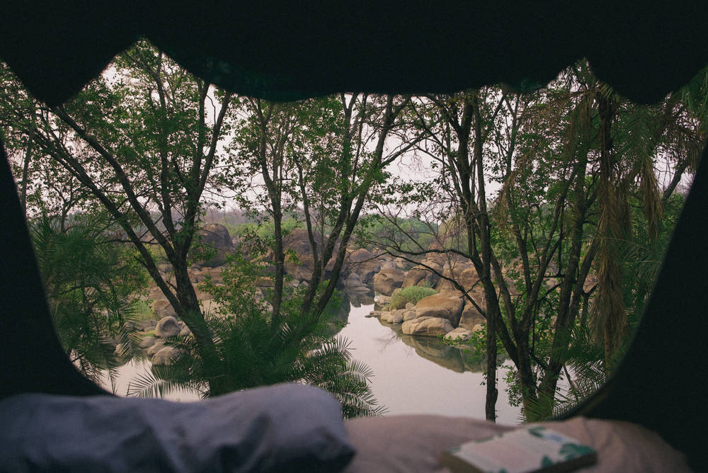

Nature video production is more than just capturing beautiful scenery, it’s about telling stories that matter. At Munjiri Videos, we help nature-focused brands craft compelling films that highlight your impact, and the amazing world you’re working to care for.
Story-first videos that help eco-conscious brands connect people to nature.
Tailored films for environmental work, sustainability, retreats, and nature-focused projects.
Collaborative process from story planning to delivery, simple, emotive, and effective.
Filming worldwide with drone footage available.
Designed for impact, ready for web, social media, campaigns, and more.
Nature video production gives your audience a way to see, feel, and connect with the natural world. In a sea of content, people crave authenticity. They want to see real places, real people, and real impact. That’s why we craft videos that go beyond surface-level, stories that immerse viewers in your purpose.
We specialise in nature video production for brands and organisations dedicated to protecting and celebrating the planet.
* Eco-conscious companies - solar energy, regenerative farming, slow fashion
* Sustainable travel & retreats - eco-lodges, wildlife safaris, adventure getaways
* Environmental organisations - charities, NGOs, and community-based projects
* Wildlife-focused initiatives - species preservation, habitat protection, education
Nature video production with us is rooted in story. We bring our filmmaking background together with a passion for wild places, and an understanding of how people actually watch and engage with video today.
Here’s how we do it:
* Simple & collaborative: We guide you every step of the way.
* Story-first approach: Emotive storytelling that connects hearts, not just minds.
* Marketing-savvy: Videos designed with practical strategy in mind, ready to perform on your website or social media.
* Natural aesthetic: We lean into the beauty of natural light, authentic sound, and real moments.
Whatever story you need to tell, our nature video production services are flexible, thoughtful, and tailored to your needs.
* Brand films for your website
* Social media videos to stay top of mind
* Short documentaries to dive deep into your mission
* Behind-the-scenes films that show your process
* Drone videography to bring scale and beauty to your visuals
* Workshops & training to help you create your own videos
"Eugene and Katy were really easy to work with in the planning stages. On the ground they were a pleasure to work with, professional and good fun. We connected right away through a shared passion for Africa’s places and it’s people, and this comes through in Munjiri’s authentic work, which is hard to find in today’s hyped up social media world. The finished product was just what we had in mind and we continue to receive only positive feedback on it. I look forward to enjoying the company of Munjiri again one day."
Paul Tickner, Kusini Safaris
“I enjoyed working with the duo from the first day to the end. I like their professionalism and their adaptation to different situations. They have worked with us in the rain and sunshine, I actually thought Katy wouldn't be able to visit some places we work in because of the nature of the environment, but she did. Keep up the good work. On behalf of the team and our participants, we say Karibu tena, Welcome again!!”
David Mulo, Pollination Project

What is nature video production?
Nature video production is the process of creating video content that highlights the natural world and the people, brands, or organisations working to protect and celebrate it. It blends documentary-style storytelling with a strong visual connection to landscapes, wildlife, and sustainable living.
What kinds of brands do you work with?
We work with eco-conscious brands, wildlife charities, nature retreats, tourism projects, and social enterprises. If you care about nature and have a story to share, we’d love to collaborate.
Do you film in remote or wild locations?
Yes! A big part of our nature video production work involves filming in wild and often remote areas. We have experience working in challenging environments.
Can you include drone footage?
Absolutely. We offer drone videography as part of our nature video packages. It’s a powerful way to showcase landscapes, scale, and the full impact of your work, whether it’s reforestation, eco-building, or wildlife conservation.
What if we don’t have a clear story yet?
That’s totally fine. Part of what we do in the early stages of our nature video production process is help you discover and shape your story. We’ll guide you through story planning so your message is clear, emotional, and engaging.
Do you help with strategy after the video is finished?
Yes, every project can include delivery in multiple formats plus guidance on how and where to use your videos for the most impact. Whether that’s your website, Instagram, YouTube, or email newsletters, we’ll help you make the most of your content.
Nature video production is about more than showing beauty, it’s about showing care. When people feel emotionally connected to your mission, they support it. Let’s craft a story that inspires, educates, and motivates action.
Get in touch at katy@munjiri.com


Brand Video Production
Social Media Video Production
Nature Video Production
Creative Video Productions
Charity Video Production
Drone Videographer
Event Video Production
Product Video Production
Travel Video Production
Learn Video Making
Video Storytelling
Video Making Tips
Video Marketing & Social Media Strategies
Nature Stories
Behind the Scenes
Client Stories
Locations & Travel
Location
Based in Portugal and South Africa, offering video production services worldwide.
Email: katy@munjiri.com
Get updates and free resources.